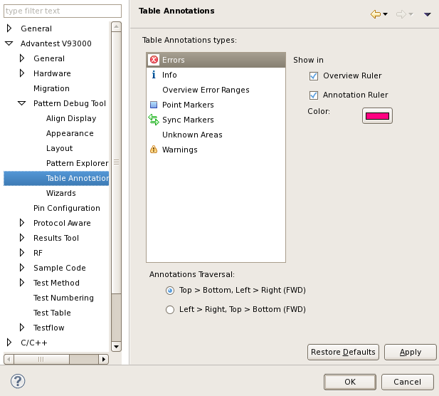

Pattern Tool - Table Annotations preference page
You can change the following preferences on the preference page.
Option |
Description |
|---|---|
Show in Overview Rulers |
Specify whether the selected annotation type is shown in the Overview Ruler. |
Show in Annotation Rulers |
Specify whether the selected annotation type is shown in the Annotation Ruler. |
Color |
Specify the color for the selected annotation type. |
Annotations Traversal |
Specify the traversal path when you navigate the table annotations by choosing /Previous Annotation.
|
The following displays the Table Annotations preference page.

Functional changes
- Introduced in SmarTest 6.5.2